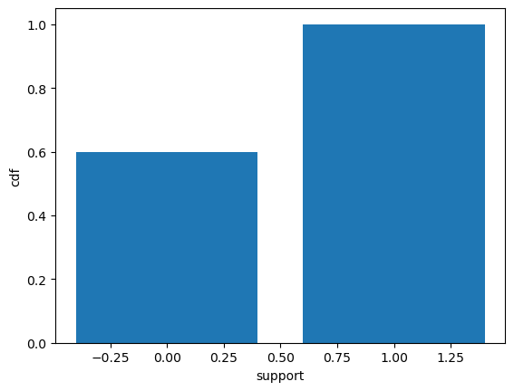
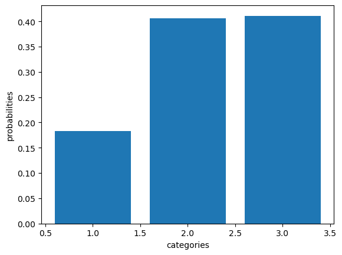
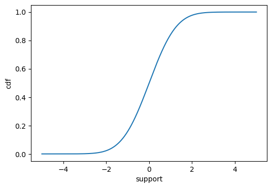
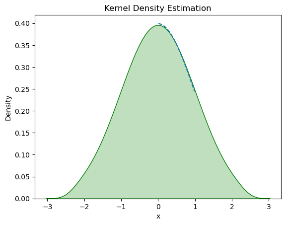

#Important libraries
import numpy as np
import matplotlib.pyplot as plt
import torch
import torch.distributions as dist
import math
from IPython.display import Image
import warnings
import seaborn as sns
warnings.filterwarnings('ignore')
%matplotlib inlineIntroduction to Univariate distribution and Sampling
This blog is your gateway to delve into various commonly used univariate sampling. Here, you will find intriguing insights into the stories behind these distributions. For example, you will discover that the outcome of a coin flip follows a Bernoulli distribution. We provide comprehensive information about each distribution, including their probability mass or probability density functions, moments, and more. Additionally, we offer implementations of these distributions using PyTorch, allowing you to explore and experiment with different flavors and variations of each distribution.
Pre-defined values
Preliminary study
****Random variables**** : If the value of X is unknown and/or could change, we call it a random variable or rv. The set of possible values, denoted X, is known as the sample space.
****Discrete rv**** : If the sample space X is finite or countably infinite, then X is called a discrete random variable.
****Continuous rv****: If \(X \in \mathbb{R}\) is a real-valued quantity, it is called a continuous random variable.
****Probability mass function or PMF**** : Let \(X\) be a discrete rv with possible outcomes \(\chi\). Then, \(f_X(x):R→[0,1]\) is the PMF of X. \[\sum_{x\in X}f_X = 1\]
****Cumulative distribution function of CDF**** : The cdf random variable \(X\) at a given value \(x\) is defined as the probability that \(X\) is smaller than \(x\) : \[F_X(x) = P(X \leq x)\].
\(1.\) If X is a discrete rv with possible outcomes \(\chi\) and the pmf \(f_X(x)\) then cdf is the function \(F_X(x) : \mathbb{R} \to [0, 1]\) with , \[F_X(x) = \sum_{t \in X: t \leq x} f_X(t)\]
\(2.\) If X is a continuous rv with possible outcomes \(\chi\) and the pdf \(f_X(x)\) then cdf is the function \(F_X(x) : \mathbb{R} \to [0, 1]\) with , \[F_X(x) = \int_{-\infty}^{x} f_X(t) \, dt\]
****Inverse CDF or Quantile function**** :Let \(X\) be a random variable with the CDF \(F_X(x)\). Then, the function \(Q_X(p) : [0, 1] \to \mathbb{R}\) which is the inverse CDF is the quantile function (QF) of \(X\). More precisely, the QF is the function that, for a given quantile \(p \in [0, 1]\) , returns the smallest x for which \(F_X(x) = p\): \[Q_X(p) = \min\{x \in \mathbb{R} \,|\, F_X(x) = p\}\]
Univariate discrete distributions
Discrete uniform distribution
****Definition**** : Let \(X\) be a discrete rv. Then \(X\) is said to be uniformly distributed with minimum \(a\) and maximum \(b\)
\[X \sim U(a,b)\]
****Support**** : \((a,b)\)
****pmf plot****
def pmf_plot(x,y):
plt.figure(figsize=(6, 4))
y = pmf_fn(x)
plt.bar(x, y)
plt.ylabel("pmf")
plt.xlabel("support")
plt.show()****pdf plot****
def pdf_plot(x,y):
plt.figure(figsize=(6, 4))
y = pdf_fn(x)
plt.plot(x, y)
plt.ylabel("pdf")
plt.xlabel("support")
plt.show()****cdf plot****
def cdf_plot(x,y):
plt.figure(figsize=(6, 4))
y = cdf_fn(x)
plt.plot(x, y)
plt.ylabel("cdf")
plt.xlabel("support")
plt.show()****inverse cdf plot****
def icdf_plot(x,y):
plt.figure(figsize=(6, 4))
y = icdf_fn(x)
plt.plot(x, y)
plt.ylabel("inverse cdf")
plt.xlabel("distribution")
plt.show()Bernoulli distribution
Definition : Let \(X\) be a random variable. Then, \(X\) is said to follow a Bernoulli distribution with success probability \(p\) \[X \sim Bern(p)\]
PMF: \[ f(x, p) = \begin{cases} p & \text{if } x = 1 \\ 1 - p & \text{if } x = 0 \\ \end{cases} \]
PMF of bernoulli distribution
from torch.distributions import Bernoulli
p = torch.tensor(0.4)
bernoulli = Bernoulli(probs=p)
bernoulli_samples = bernoulli.sample((1000,))
x = [0, 1]
f = []
s = []
for i in bernoulli_samples:
if i == 1:
s.append(i)
else:
f.append(i)
categories = ['0', '1']
pmf = [len(f) / len(bernoulli_samples), len(s) / len(bernoulli_samples)]
plt.bar(categories, pmf)
plt.ylabel("Probability")
plt.xlabel("Support")Text(0.5, 0, 'Support')
CDF:\[{\begin{cases}0&{\text{if }}k<0\\1-p&{\text{if }}0\leq k<1\\1&{\text{if }}k\geq 1\end{cases}}\]
CDF of Bernoulli distribution
p = 0.4
bernoulli_dist = dist.Bernoulli(probs=torch.tensor(p))
x = torch.tensor([0, 1])
cdf = torch.tensor([1.0 - p,1])
plt.bar(x, cdf)
plt.xlabel('support')
plt.ylabel('cdf')Text(0, 0.5, 'cdf')
Categorical distribution
Definition - In a set of discrete outcomes, each outcome is assigned a probability. \[X∼Cat([p_1,…,p_k])\]
****pmf**** : \[ f(x; p_1, p_2, ..., p_k) = \begin{cases} p_1 & \text{if } x = 1 \\ p_2 & \text{if } x = 2 \\ \vdots \\ p_k & \text{if } x = k \\ \end{cases} \]
PMF of Categorical distribution
from torch.distributions import Categorical
probs=torch.tensor([0.20,0.40,0.40])
categorical_distribution = Categorical(probs)
categorical_numbers = categorical_distribution.sample((1000,))
category_counts = torch.bincount(categorical_numbers) #Bincount:count the number of occurrences of each value #of occurrences of each value
probabilities = category_counts / 1000
categories = torch.arange(1,len(probabilities)+1)
plt.bar(categories, probabilities)
plt.ylabel("probabilities")
plt.xlabel("categories")Text(0.5, 0, 'categories')
CDF of Categorical distribution
probs=torch.tensor([.20,.40,.40])
cdf = torch.cumsum((probs),dim=0)
print(cdf)
categories = torch.arange(1,len(probabilities)+1)
plt.bar(categories,cdf)
plt.ylabel("cdf")
plt.xlabel("categories")tensor([0.2000, 0.6000, 1.0000])Text(0.5, 0, 'categories')Univariate continuous distributions
PDF : \[f_X(x) = \frac{1}{b - a}, \quad \text{where } x \in \{a, a+1, \ldots, b-1, b\}\]
from torch.distributions import Uniform
x = torch.linspace(2,6,1000)
def pdf_fn(x):
a=2
b=6
uniform_dist = Uniform(a, b)
return uniform_dist.log_prob(x).exp()
pdf_plot(x,pdf_fn(x))
CDF: \[F(x) = \begin{cases} 0 & \text{if } x < a \\ \frac{{x - a}}{{b - a}} & \text{if } a \leq x < b \\ 1 & \text{if } x \geq b \\ \end{cases} \]
a=1
b=6
x=torch.linspace(1,6,10)
def cdf_fn(x):
return (x - a) / (b - a)
cdf_plot(x,cdf_fn(x))
Normal distribution
Definition : The normal distribution arises when many small factors contribute to a quantity without any extreme variations, resulting in a bell-shaped curve.
PDF :
\[ f(x;\mu, \sigma) = \frac{1}{\sqrt{2\pi\sigma^2}} e^{-\frac{(x-\mu)^2}{2\sigma^2}} \]
Support : (\(-\infty\) to \(+\infty\))
from torch.distributions import Normal
a = -5
b = 5
x = torch.linspace(a,b,1000)
def pdf_fn(x):
mean = torch.tensor([0.0])
stddev = torch.tensor([1.0])
normal_dist = dist.Normal(mean, stddev)
return torch.exp(normal_dist.log_prob(x))
plt.plot(x, pdf_fn(x))
****CDF**** : \[F_X(x) = \frac{1}{2} \left[ 1 + \text{erf}\left(\frac{x - \mu}{\sqrt{2}\sigma}\right) \right]\]
CDF of Normal distribution
from scipy.stats import norm
a = -5
b = 5
x = torch.linspace(a,b,1000)
def cdf_fn(x):
return norm.cdf(x, loc=0, scale=1)
cdf_plot(x,cdf_fn(x))
Inverse CDF: \[Q_X(p) = \sqrt{2\sigma} \cdot \text{erf}^{-1}(2p - 1) + \mu\]
Inverse CDF of Normal distribution
a = 0.01
b = 0.99
x = torch.linspace(a,b,1000)
def icdf_fn(x):
return norm.ppf(x, loc=0, scale=1)
icdf_plot(x,icdf_fn(x))plt.plot(x, pdf_fn(x),linestyle = 'dashed')
icdf_samples=icdf_fn(x)
sns.kdeplot(icdf_samples, color='green',shade='True')
plt.xlabel("x")
plt.ylabel("Density")
plt.title("Kernel Density Estimation")Text(0.5, 1.0, 'Kernel Density Estimation')
Beta distribution
Definition : Let’s say you have two processes, each consisting of multiple steps. Both processes occur at the same rate, but the first process requires \(\alpha\) step and the second process \(\beta\) ,the fraction of the total waiting time taken by the first process is Beta distributed .
PDF: \[f(x; \alpha, \beta) = \frac{x^{\alpha-1} (1-x)^{\beta-1}}{B(\alpha, \beta)}\]
where
\[B(\alpha, \beta) = \int_0^1 x^{\alpha-1} (1-x)^{\beta-1} dx\]
Support : [0, 1]
****PDF of beta distribution**** :
x = torch.linspace(0,1,1000)
def pdf_fn(x):
alpha = 2
beta = 7
beta_dist = torch.distributions.Beta(alpha, beta)
return beta_dist.log_prob(torch.tensor(x)).exp()
pdf_plot(x,pdf_fn(x))CDF of beta distribution :
CDF : \[F_X(x) = \frac{B(x; \alpha, \beta)}{B(\alpha, \beta)}\]
where \({B(a, b)}\) is the beta function and \(B(x; \alpha, \beta)\) is the incomplete gamma function.
import scipy.stats as stats
x = torch.linspace(0,1,10000)
def cdf_fn(x):
alpha = 2.0
beta = 7.0
return stats.beta(alpha, beta).cdf(x)
cdf_plot(x, cdf_fn(x))
****Inverse CDF**** :
\[x = (1-p) \cdot \alpha_1^{-1} \cdot p \cdot \beta_1^{-1}\]
****Inverse CDF of Bata distribution****
x=torch.linspace(0,1,10000)
def icdf_fn(x):
alpha = 2.0
beta = 7.0
return stats.beta.ppf(x, alpha, beta)
icdf_plot(x,icdf_fn(x))plt.plot(x, pdf_fn(x),linestyle = 'dashed')
icdf_samples=icdf_fn(x)
sns.kdeplot(icdf_samples, color='green',shade='True')
plt.xlabel("x")
plt.ylabel("Density")
plt.title("Kernel Density Estimation")Text(0.5, 1.0, 'Kernel Density Estimation')Gamma distrubution
Let \(X\) be a random variable. Then, \(X\) is said to follow a gamma distribution with shape a and rate \(b\) \[X \sim \text{Gamma}(a, b)\]
****PDF**** : \[f(x; a, b) = \frac{b^a}{\Gamma(a)} x^{a-1} e^{-bx}, \quad x > 0\] where \(a>0\) and \(b>0\)
****PDF of Gamma distribution****
x = torch.linspace(0,10,1000)
def pdf_fn(x):
alpha = 10.0
beta = 2.0
gamma_dist = torch.distributions.Gamma(alpha, beta)
return gamma_dist.log_prob(x).exp()
pdf_plot(x,pdf_fn(x))****CDF of Gamma distribution****
****CDF****: \[F_X(x) = \frac{\gamma(a, bx)}{\Gamma(a)}\] where \(\Gamma(a)\) is the gamma function and \(\gamma(a, bx)\) is the lower incomplete gamma function.
x = torch.linspace(0,20,1000)
def cdf_fn(x):
alpha = 10.0
beta = 2.0
return stats.gamma(alpha, beta).cdf(x)
cdf_plot(x, cdf_fn(x))****Inverse CDF of Gamma distribution****
****Inverse CDF**** :
\[x = (-\log(1-p)) \cdot \text{shape}^{-1} \cdot \text{scale}\]
x=torch.linspace(0,1,1000)
def icdf_fn(x):
shape = 10.0
scale = 2.0
gamma_dist = stats.gamma(shape, scale=scale)
return gamma_dist.ppf(x)
icdf_plot(x,icdf_fn(x))plt.plot(x, pdf_fn(x),linestyle = 'dashed',color='red')
icdf_samples=icdf_fn(x)
sns.kdeplot(icdf_samples, color='green',shade='True')
plt.xlabel("x")
plt.ylabel("Density")
plt.title("Kernel Density Estimation")Text(0.5, 1.0, 'Kernel Density Estimation')Implementing a pseudo-random number generator (PRNG)
Implementing a pseudo-random number generator (PRNG) - Generates a sequence of numbers that exhibit properties of randomness
Linear Congruential Generator (LCG) is a simple PRNG algorithm - The LCG algorithm is defined by the recurrence relation:
\(X_{n+1} = (a \cdot X_n + c) \mod m\)
- \(X_{n+1}\) is the Next pseudo-random number.
- \(X_n\) is the current pseudo-random number.
- \(a\) is the multiplier , determines the period of the generated number.
- \(c\) is the increment, shifts the generated sequence.
- \(m\) is the modulus, determines the range of values .
Integer Constant
\(m,{0<m}\) — The modulus
\(a,0<a<m\) — The multiplier
\(c,0<=c<m\) — The increment
\(X_{0},0<X_{0}<m\) — The seed / start value
# Function for Linear Congruential Generator
def lcg(seed, n_samples):
"""
Generates a sequence of pseudo-random numbers using the Linear Congruential Generator (LCG) algorithm.
Args:
seed (int): The seed value for the LCG algorithm.
n_samples (int): The number of random numbers to generate.
Returns:
list: A list of pseudo-random numbers normalized to the range [0, 1].
"""
a = 1103515245
c = 12345
m = 2 ** 31
random_numbers = []
for _ in range(n_samples):
seed = (a * seed + c) % m
random_number = seed / m # Normalize to range [0, 1]
random_numbers.append(random_number)
return random_numbers
random_numbers = lcg(seed=42, n_samples =1000)
plt.hist(random_numbers )
plt.xlabel('Random Number')
plt.ylabel('Frequency')Text(0, 0.5, 'Frequency')
Uniform distribution to Normal sampling
Box Muller Method
def uniform_to_normal_boxmuller(n_samples):
"""
Generates a sequence of pseudo-random numbers from a standard normal distribution using the Box-Muller method.
Args:
n_samples (int): The number of random numbers to generate.
Returns:
torch.Tensor: A tensor of pseudo-random numbers following the standard normal distribution.
"""
uniform_distribution = dist.Uniform(0, 1)
random_numbers = []
for _ in range(n_samples // 2):
u1 = uniform_distribution.sample()
u2 = uniform_distribution.sample()
z1 = torch.sqrt(-2 * torch.log(u1)) * torch.cos(2 * math.pi * u2)
z2 = torch.sqrt(-2 * torch.log(u1)) * torch.sin(2 * math.pi * u2)
random_numbers.append(z1)
random_numbers.append(z2)
if n_samples % 2 != 0:
u = uniform_distribution.sample()
z = torch.sqrt(-2 * torch.log(u)) * torch.cos(2 * math.pi * uniform_distribution.sample())
random_numbers.append(z)
return torch.stack(random_numbers)